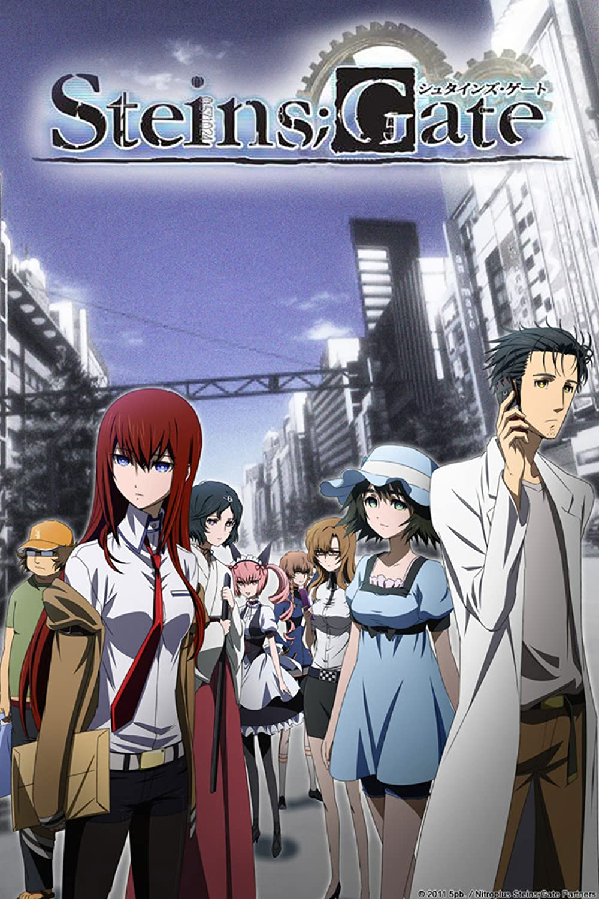

Stein's Gate - Jukki Hanada

Overview & Recap
Stein's gate is a science fiction/psychological thriller anime. A group of friends creates a machine capable of sending messages across time, and cause ripples through the past and present.
Ep i got up to and why i dropped it
I finished ep 3 and then i couldnt watch anymore. i found it really confusing but ppl tell me that it all makes sense after you watch the whole thing. ill probably pick it up again cus it seems really interesting. also its nicknamed 'big brain' so.. we shall see